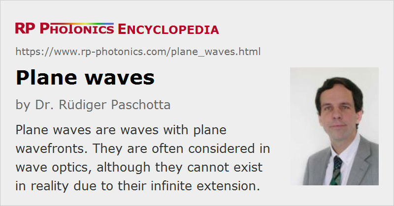

Plane Waves
Definition: waves with plane wavefronts
German: ebene Wellen
Categories: general optics, physical foundations
How to cite the article; suggest additional literature
Author: Dr. Rüdiger Paschotta
Plane waves are very often considered in wave optics as well as in other areas where waves play a role. They are the kind of waves with the simplest geometric form and mathematical description. By definition, they have plane wavefronts: at any moment of time, the locations of constant phase are planes. Plane waves are satisfying wave equations in homogeneous media or in free space; therefore, one can say that plane waves are free-space modes.
A monochromatic plane wave is most easily characterized by a wave vector, with which the wave field can be described as
with the wave vector, the magnitude of which is the wavenumber k, and the angular frequency ω. In optics, the oscillating quantity is often the electric field strength E. The wave vector indicates in which direction the wave travels, and its magnitude tells the phase change per unit length (for a fixed time). A plane wave has a well defined direction of propagation with no divergence.
Plane waves need to be extended infinitely, because otherwise any usual wave equation would not be fulfilled. Therefore, plane waves actually never occur in reality. However, a real wave may at least approximate a plane wave over some volume.
The spacing of the wavefronts is the wavelength. That quantity is specifically defined for plane waves, or for waves which at least approximates them. Note that in a laser beam, for example, which converges to a focus and then diverges, the wavefront spacing necessarily needs to undergo some changes. This is true even for that spacing on the beam axis; for Gaussian beams, there is the Gouy phase shift which somewhat affects that spacing in the region of the focus.
Note that other properties, which are frequently attributed to light in general, apply only to plane waves. For example, the phase velocity of light is defined for plane waves. Also, one often calculates chromatic dispersion based on the assumption of plane waves, and the results are not valid for light propagating in a waveguide, for example (guided waves).
Due to the rather short wavelengths in optics, a reasonable approximation of plane waves is possible without covering large volumes of space. For example, some volume within a laser beam with a beam radius of only a few millimeters can be taken as such an approximation.
Fourier optics is an area of optics where light beams and other light waves are essentially decomposed into plane waves, using spatial Fourier transforms.
Questions and Comments from Users
Here you can submit questions and comments. As far as they get accepted by the author, they will appear above this paragraph together with the author’s answer. The author will decide on acceptance based on certain criteria. Essentially, the issue must be of sufficiently broad interest.
Please do not enter personal data here; we would otherwise delete it soon. (See also our privacy declaration.) If you wish to receive personal feedback or consultancy from the author, please contact him e.g. via e-mail.
By submitting the information, you give your consent to the potential publication of your inputs on our website according to our rules. (If you later retract your consent, we will delete those inputs.) As your inputs are first reviewed by the author, they may be published with some delay.
See also: wave optics, wavefronts, wavelength, Fourier optics
and other articles in the categories general optics, physical foundations
|  |
If you like this page, please share the link with your friends and colleagues, e.g. via social media:
These sharing buttons are implemented in a privacy-friendly way!